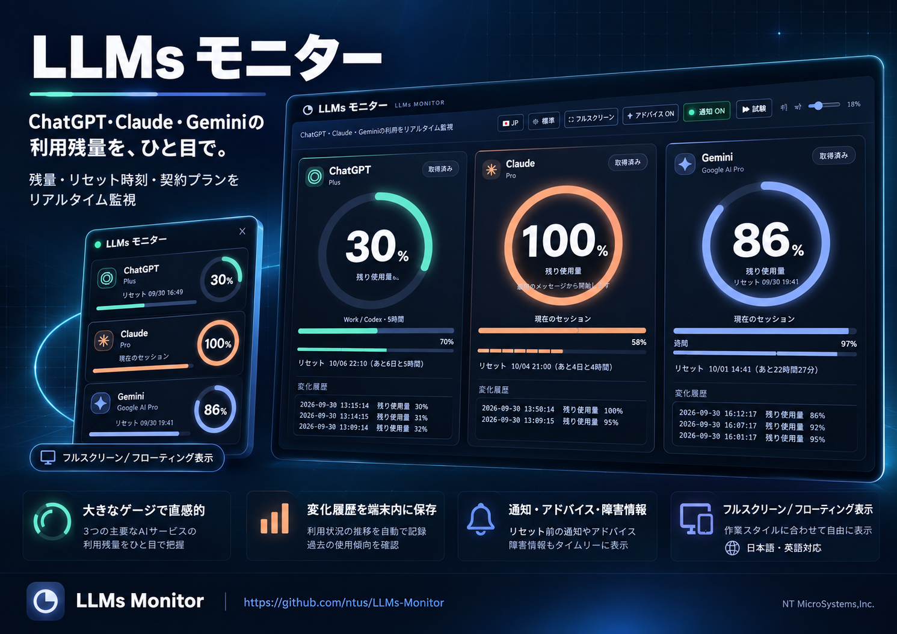

◎ChatGPTPlus
30%remaining
Weekly70%
USAGE INTELLIGENCE, KEPT LOCAL
ChatGPT, Claude and Gemini usage limits, reset times and plans—organized in one calm, real-time view.
Weekly70%
Weekly58%
Weekly97%
One view for the limits that shape your AI workflow.
DESIGNED FOR FOCUS
Large gauges and bars make current and weekly capacity readable from across the room.
Reset countdowns, entitlement deadlines and usage advice help you choose the right moment.
Changes are kept in browser storage and used locally for trend analysis.
Fullscreen, compact popup, floating panel, light and dark themes, with sound controls.
Provider status summaries sit beside usage data, with recovery and incident alerts.
A consistent interface in English and Japanese, selected automatically or on demand.
PRIVACY BY ARCHITECTURE
The monitor reads supported values from official sessions through the extension. It does not ask for provider passwords, send prompts, purchase credits, change plans or exercise reset entitlements.
Read the privacy policy →
ONE MONITOR, MANY WAYS TO VIEW
Use the full dashboard for planning or keep a compact panel nearby while you work.
Download product flyer ↓See your available usage before deciding where the next task belongs.
Open monitor